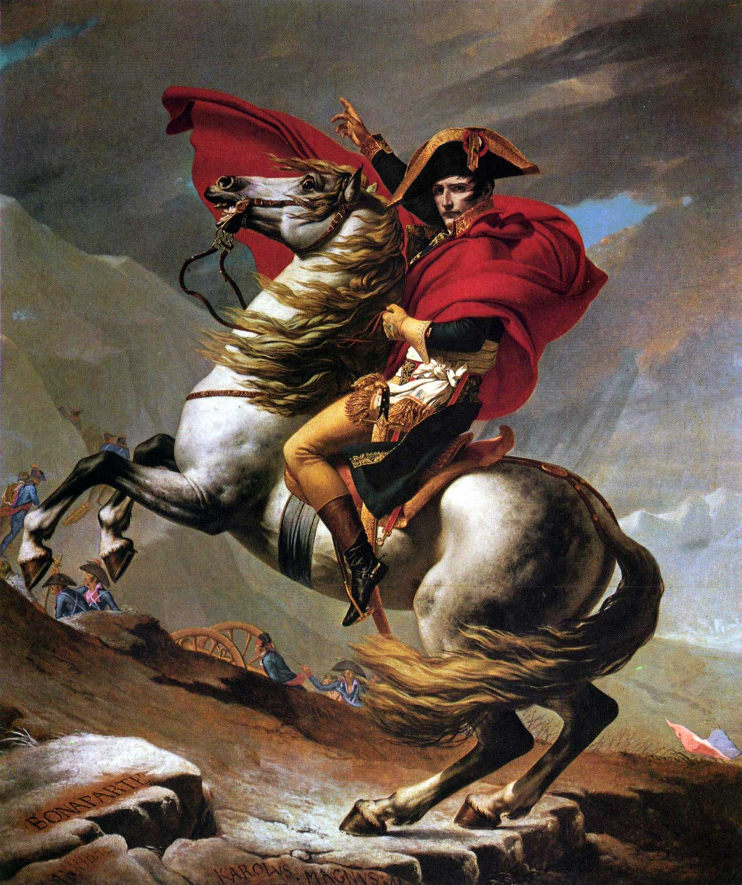

1.0 - Figure
Media referenced within set text.
-
Default styling

<figure class="{$modifiers}"> <img src="public/images/example-1.jpg" alt="Napoleon Crossing the Alps" /> </figure> -
.figure--border
A figure framed with a border.
<figure class="figure--border"> <img src="public/images/example-1.jpg" alt="Napoleon Crossing the Alps" /> </figure> -
.figure--browser
A figure framed with browser chrome. Implementation partially based on Robert Fleischmann’s pen.
<figure class="figure--browser"> <img src="public/images/example-1.jpg" alt="Napoleon Crossing the Alps" /> </figure> -
.figure--breakout
A figure that visually breaks the container when there is space available.
<figure class="figure--breakout"> <img src="public/images/example-1.jpg" alt="Napoleon Crossing the Alps" /> </figure>
1.1 - Figure with Caption
Descriptions of figures.
-
Default styling
Jacques-Louis David, Napoleon Crossing the Alps or Bonaparte at the St Bernard Pass, . Oil on canvas, 102 × 87in (260 × 221cm). Chateau de Malmaison, Rueil-Malmaison. <figure class="{$modifiers}"> <img src="public/images/example-1.jpg" alt="Napoleon Crossing the Alps" /> <figcaption>Jacques-Louis David, <cite>Napoleon Crossing the Alps</cite> or <cite>Bonaparte at the St Bernard Pass</cite>, <time>1800–1</time>. Oil on canvas, 102 × 87<abbr>in</abbr> (260 × 221<abbr>cm</abbr>). Chateau de Malmaison, Rueil-Malmaison.</figcaption> </figure> -
.figure--aside
A figure with the caption as marginalia when possible.
Jacques-Louis David, Napoleon Crossing the Alps or Bonaparte at the St Bernard Pass, . Oil on canvas, 102 × 87in (260 × 221cm). Chateau de Malmaison, Rueil-Malmaison. <figure class="figure--aside"> <img src="public/images/example-1.jpg" alt="Napoleon Crossing the Alps" /> <figcaption>Jacques-Louis David, <cite>Napoleon Crossing the Alps</cite> or <cite>Bonaparte at the St Bernard Pass</cite>, <time>1800–1</time>. Oil on canvas, 102 × 87<abbr>in</abbr> (260 × 221<abbr>cm</abbr>). Chateau de Malmaison, Rueil-Malmaison.</figcaption> </figure> -
.figure--border
A figure framed with a border.
Jacques-Louis David, Napoleon Crossing the Alps or Bonaparte at the St Bernard Pass, . Oil on canvas, 102 × 87in (260 × 221cm). Chateau de Malmaison, Rueil-Malmaison. <figure class="figure--border"> <img src="public/images/example-1.jpg" alt="Napoleon Crossing the Alps" /> <figcaption>Jacques-Louis David, <cite>Napoleon Crossing the Alps</cite> or <cite>Bonaparte at the St Bernard Pass</cite>, <time>1800–1</time>. Oil on canvas, 102 × 87<abbr>in</abbr> (260 × 221<abbr>cm</abbr>). Chateau de Malmaison, Rueil-Malmaison.</figcaption> </figure> -
.figure--browser
A figure framed with browser chrome. (Should respond to vertical media queries to change device.)
Jacques-Louis David, Napoleon Crossing the Alps or Bonaparte at the St Bernard Pass, . Oil on canvas, 102 × 87in (260 × 221cm). Chateau de Malmaison, Rueil-Malmaison. <figure class="figure--browser"> <img src="public/images/example-1.jpg" alt="Napoleon Crossing the Alps" /> <figcaption>Jacques-Louis David, <cite>Napoleon Crossing the Alps</cite> or <cite>Bonaparte at the St Bernard Pass</cite>, <time>1800–1</time>. Oil on canvas, 102 × 87<abbr>in</abbr> (260 × 221<abbr>cm</abbr>). Chateau de Malmaison, Rueil-Malmaison.</figcaption> </figure> -
.figure--breakout
A figure that visually breaks the container when there is space available.
Jacques-Louis David, Napoleon Crossing the Alps or Bonaparte at the St Bernard Pass, . Oil on canvas, 102 × 87in (260 × 221cm). Chateau de Malmaison, Rueil-Malmaison. <figure class="figure--breakout"> <img src="public/images/example-1.jpg" alt="Napoleon Crossing the Alps" /> <figcaption>Jacques-Louis David, <cite>Napoleon Crossing the Alps</cite> or <cite>Bonaparte at the St Bernard Pass</cite>, <time>1800–1</time>. Oil on canvas, 102 × 87<abbr>in</abbr> (260 × 221<abbr>cm</abbr>). Chateau de Malmaison, Rueil-Malmaison.</figcaption> </figure> -
.figure--breakout.figure--aside
A combination of the breakout and aside modules.
Jacques-Louis David, Napoleon Crossing the Alps or Bonaparte at the St Bernard Pass, . Oil on canvas, 102 × 87in (260 × 221cm). Chateau de Malmaison, Rueil-Malmaison. <figure class="figure--breakout figure--aside"> <img src="public/images/example-1.jpg" alt="Napoleon Crossing the Alps" /> <figcaption>Jacques-Louis David, <cite>Napoleon Crossing the Alps</cite> or <cite>Bonaparte at the St Bernard Pass</cite>, <time>1800–1</time>. Oil on canvas, 102 × 87<abbr>in</abbr> (260 × 221<abbr>cm</abbr>). Chateau de Malmaison, Rueil-Malmaison.</figcaption> </figure> -
.figure--overlay
An image with an optional overlayed caption.
Jacques-Louis David, Napoleon Crossing the Alps or Bonaparte at the St Bernard Pass, . Oil on canvas, 102 × 87in (260 × 221cm). Chateau de Malmaison, Rueil-Malmaison. <figure class="figure--overlay"> <img src="public/images/example-1.jpg" alt="Napoleon Crossing the Alps" /> <figcaption>Jacques-Louis David, <cite>Napoleon Crossing the Alps</cite> or <cite>Bonaparte at the St Bernard Pass</cite>, <time>1800–1</time>. Oil on canvas, 102 × 87<abbr>in</abbr> (260 × 221<abbr>cm</abbr>). Chateau de Malmaison, Rueil-Malmaison.</figcaption> </figure> -
.figure--overlay.figure--breakout
A combination of the breakout and overlay modules.
Jacques-Louis David, Napoleon Crossing the Alps or Bonaparte at the St Bernard Pass, . Oil on canvas, 102 × 87in (260 × 221cm). Chateau de Malmaison, Rueil-Malmaison. <figure class="figure--overlay figure--breakout"> <img src="public/images/example-1.jpg" alt="Napoleon Crossing the Alps" /> <figcaption>Jacques-Louis David, <cite>Napoleon Crossing the Alps</cite> or <cite>Bonaparte at the St Bernard Pass</cite>, <time>1800–1</time>. Oil on canvas, 102 × 87<abbr>in</abbr> (260 × 221<abbr>cm</abbr>). Chateau de Malmaison, Rueil-Malmaison.</figcaption> </figure>
1.2 - Figure with Children
Diptychs, triptychs, etc.
-
Default styling


Three of the five versions of Jacques-Louis David’s Napoleon Crossing the Alps: the first Versailles, Belvedere, and second Versailles. <figure class="{$modifiers}"> <img src="public/images/example-1.jpg" alt="Napoleon Crossing the Alps" /> <img src="public/images/example-5.jpg" alt="Napoleon Crossing the Alps (Belvedere version)" /> <img src="public/images/example-2.jpg" alt="Napoleon Crossing the Alps (Second version)" /> <figcaption>Three of the five versions of Jacques-Louis David’s <cite>Napoleon Crossing the Alps</cite>: the first Versailles, Belvedere, and second Versailles.</figcaption> </figure> -
.figure--aside
A figure with the caption as marginalia when possible.
Three of the five versions of Jacques-Louis David’s Napoleon Crossing the Alps: the first Versailles, Belvedere, and second Versailles. <figure class="figure--aside"> <img src="public/images/example-1.jpg" alt="Napoleon Crossing the Alps" /> <img src="public/images/example-5.jpg" alt="Napoleon Crossing the Alps (Belvedere version)" /> <img src="public/images/example-2.jpg" alt="Napoleon Crossing the Alps (Second version)" /> <figcaption>Three of the five versions of Jacques-Louis David’s <cite>Napoleon Crossing the Alps</cite>: the first Versailles, Belvedere, and second Versailles.</figcaption> </figure> -
.figure--border
A figure framed with a border.
Three of the five versions of Jacques-Louis David’s Napoleon Crossing the Alps: the first Versailles, Belvedere, and second Versailles. <figure class="figure--border"> <img src="public/images/example-1.jpg" alt="Napoleon Crossing the Alps" /> <img src="public/images/example-5.jpg" alt="Napoleon Crossing the Alps (Belvedere version)" /> <img src="public/images/example-2.jpg" alt="Napoleon Crossing the Alps (Second version)" /> <figcaption>Three of the five versions of Jacques-Louis David’s <cite>Napoleon Crossing the Alps</cite>: the first Versailles, Belvedere, and second Versailles.</figcaption> </figure> -
.figure--breakout
A figure that visually breaks the container when there is space available.
Three of the five versions of Jacques-Louis David’s Napoleon Crossing the Alps: the first Versailles, Belvedere, and second Versailles. <figure class="figure--breakout"> <img src="public/images/example-1.jpg" alt="Napoleon Crossing the Alps" /> <img src="public/images/example-5.jpg" alt="Napoleon Crossing the Alps (Belvedere version)" /> <img src="public/images/example-2.jpg" alt="Napoleon Crossing the Alps (Second version)" /> <figcaption>Three of the five versions of Jacques-Louis David’s <cite>Napoleon Crossing the Alps</cite>: the first Versailles, Belvedere, and second Versailles.</figcaption> </figure> -
.figure--breakout.figure--aside
A combination of the breakout and aside modules.
Three of the five versions of Jacques-Louis David’s Napoleon Crossing the Alps: the first Versailles, Belvedere, and second Versailles. <figure class="figure--breakout figure--aside"> <img src="public/images/example-1.jpg" alt="Napoleon Crossing the Alps" /> <img src="public/images/example-5.jpg" alt="Napoleon Crossing the Alps (Belvedere version)" /> <img src="public/images/example-2.jpg" alt="Napoleon Crossing the Alps (Second version)" /> <figcaption>Three of the five versions of Jacques-Louis David’s <cite>Napoleon Crossing the Alps</cite>: the first Versailles, Belvedere, and second Versailles.</figcaption> </figure> -
.figure--breakout.figure--border
A combination of the breakout and border modules.
Three of the five versions of Jacques-Louis David’s Napoleon Crossing the Alps: the first Versailles, Belvedere, and second Versailles. <figure class="figure--breakout figure--border"> <img src="public/images/example-1.jpg" alt="Napoleon Crossing the Alps" /> <img src="public/images/example-5.jpg" alt="Napoleon Crossing the Alps (Belvedere version)" /> <img src="public/images/example-2.jpg" alt="Napoleon Crossing the Alps (Second version)" /> <figcaption>Three of the five versions of Jacques-Louis David’s <cite>Napoleon Crossing the Alps</cite>: the first Versailles, Belvedere, and second Versailles.</figcaption> </figure>
1.3 - Figure with Responsive Embeded Media
Generic embedded media, like a YouTube video or Twitter card.
-
Default styling
Hand-painted reproduction of Jacques-Louis David’s Napoleon Crossing the Alps, using oil on blank linen canvas. <figure class="figure--embed {$modifiers}"> <div class="embed-container"> <iframe src="http://player.vimeo.com/video/35152332" frameborder="0" webkitAllowFullScreen mozallowfullscreen allowFullScreen></iframe> </div> <figcaption>Hand-painted reproduction of Jacques-Louis David’s <cite>Napoleon Crossing the Alps</cite>, using oil on blank linen canvas.</figcaption> </figure> -
.figure--aside
Embeded media that has a caption as marginalia, when possible.
Hand-painted reproduction of Jacques-Louis David’s Napoleon Crossing the Alps, using oil on blank linen canvas. <figure class="figure--embed figure--aside"> <div class="embed-container"> <iframe src="http://player.vimeo.com/video/35152332" frameborder="0" webkitAllowFullScreen mozallowfullscreen allowFullScreen></iframe> </div> <figcaption>Hand-painted reproduction of Jacques-Louis David’s <cite>Napoleon Crossing the Alps</cite>, using oil on blank linen canvas.</figcaption> </figure> -
.figure--border
Embeded media framed with a border.
Hand-painted reproduction of Jacques-Louis David’s Napoleon Crossing the Alps, using oil on blank linen canvas. <figure class="figure--embed figure--border"> <div class="embed-container"> <iframe src="http://player.vimeo.com/video/35152332" frameborder="0" webkitAllowFullScreen mozallowfullscreen allowFullScreen></iframe> </div> <figcaption>Hand-painted reproduction of Jacques-Louis David’s <cite>Napoleon Crossing the Alps</cite>, using oil on blank linen canvas.</figcaption> </figure> -
.figure--breakout
Embeded media that visually breaks the container when there is space available.
Hand-painted reproduction of Jacques-Louis David’s Napoleon Crossing the Alps, using oil on blank linen canvas. <figure class="figure--embed figure--breakout"> <div class="embed-container"> <iframe src="http://player.vimeo.com/video/35152332" frameborder="0" webkitAllowFullScreen mozallowfullscreen allowFullScreen></iframe> </div> <figcaption>Hand-painted reproduction of Jacques-Louis David’s <cite>Napoleon Crossing the Alps</cite>, using oil on blank linen canvas.</figcaption> </figure> -
.figure--breakout.figure--aside
A combination of the breakout and aside modules.
Hand-painted reproduction of Jacques-Louis David’s Napoleon Crossing the Alps, using oil on blank linen canvas. <figure class="figure--embed figure--breakout figure--aside"> <div class="embed-container"> <iframe src="http://player.vimeo.com/video/35152332" frameborder="0" webkitAllowFullScreen mozallowfullscreen allowFullScreen></iframe> </div> <figcaption>Hand-painted reproduction of Jacques-Louis David’s <cite>Napoleon Crossing the Alps</cite>, using oil on blank linen canvas.</figcaption> </figure> -
.figure--overlay
Embeded media with an overlayed caption.
Hand-painted reproduction of Jacques-Louis David’s Napoleon Crossing the Alps, using oil on blank linen canvas. <figure class="figure--embed figure--overlay"> <div class="embed-container"> <iframe src="http://player.vimeo.com/video/35152332" frameborder="0" webkitAllowFullScreen mozallowfullscreen allowFullScreen></iframe> </div> <figcaption>Hand-painted reproduction of Jacques-Louis David’s <cite>Napoleon Crossing the Alps</cite>, using oil on blank linen canvas.</figcaption> </figure> -
.figure--overlay.figure--breakout
A combination of the breakout and overlay modules.
Hand-painted reproduction of Jacques-Louis David’s Napoleon Crossing the Alps, using oil on blank linen canvas. <figure class="figure--embed figure--overlay figure--breakout"> <div class="embed-container"> <iframe src="http://player.vimeo.com/video/35152332" frameborder="0" webkitAllowFullScreen mozallowfullscreen allowFullScreen></iframe> </div> <figcaption>Hand-painted reproduction of Jacques-Louis David’s <cite>Napoleon Crossing the Alps</cite>, using oil on blank linen canvas.</figcaption> </figure> -
.figure--square
Embeded media scaled or cropped within a square. Works especially well with Vine and Instagram.
Hand-painted reproduction of Jacques-Louis David’s Napoleon Crossing the Alps, using oil on blank linen canvas. <figure class="figure--embed figure--square"> <div class="embed-container"> <iframe src="http://player.vimeo.com/video/35152332" frameborder="0" webkitAllowFullScreen mozallowfullscreen allowFullScreen></iframe> </div> <figcaption>Hand-painted reproduction of Jacques-Louis David’s <cite>Napoleon Crossing the Alps</cite>, using oil on blank linen canvas.</figcaption> </figure>
1.3.1 - Figure with Square Embed
A pre-sized embed, like an Instagram photo.
-
Default styling
Throwback Thursday: Napoleon Crossing the Alps. <figure class="figure--embed figure--square {$modifiers}"> <div class="embed-container"> <iframe src="//instagram.com/p/snOu1DSKY8/embed/" frameborder="0" scrolling="no" allowtransparency="true"></iframe> </div> <figcaption>Throwback Thursday: <cite>Napoleon Crossing the Alps</cite>.</figcaption> </figure> -
.figure--aside
A figure with the caption as marginalia when possible.
Throwback Thursday: Napoleon Crossing the Alps. <figure class="figure--embed figure--square figure--aside"> <div class="embed-container"> <iframe src="//instagram.com/p/snOu1DSKY8/embed/" frameborder="0" scrolling="no" allowtransparency="true"></iframe> </div> <figcaption>Throwback Thursday: <cite>Napoleon Crossing the Alps</cite>.</figcaption> </figure> -
.figure--border
A figure with a border.
Throwback Thursday: Napoleon Crossing the Alps. <figure class="figure--embed figure--square figure--border"> <div class="embed-container"> <iframe src="//instagram.com/p/snOu1DSKY8/embed/" frameborder="0" scrolling="no" allowtransparency="true"></iframe> </div> <figcaption>Throwback Thursday: <cite>Napoleon Crossing the Alps</cite>.</figcaption> </figure>